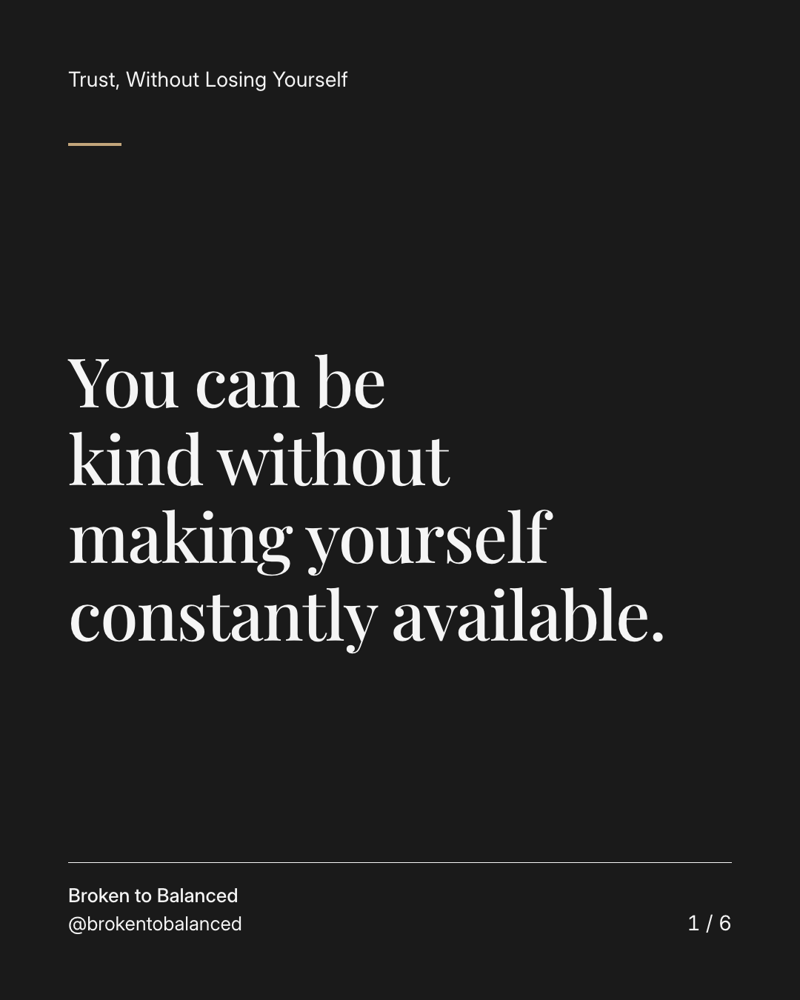
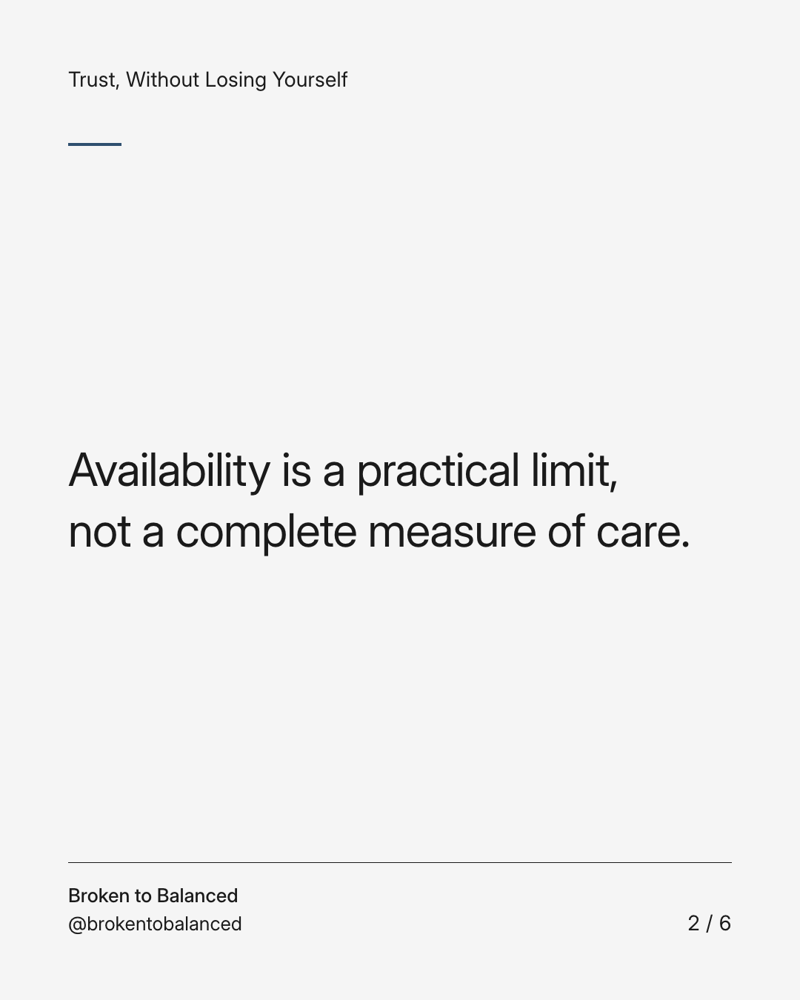
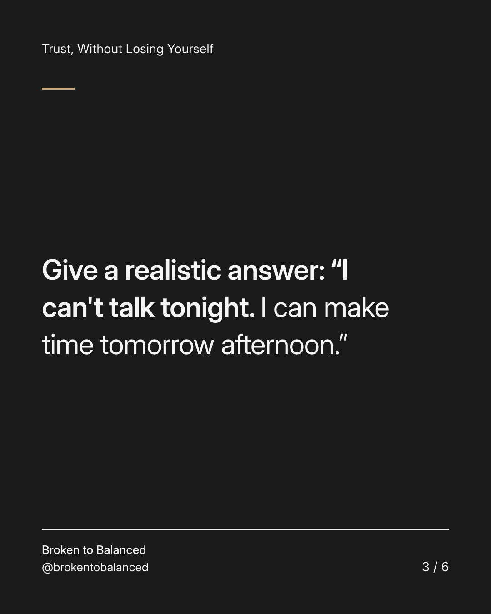
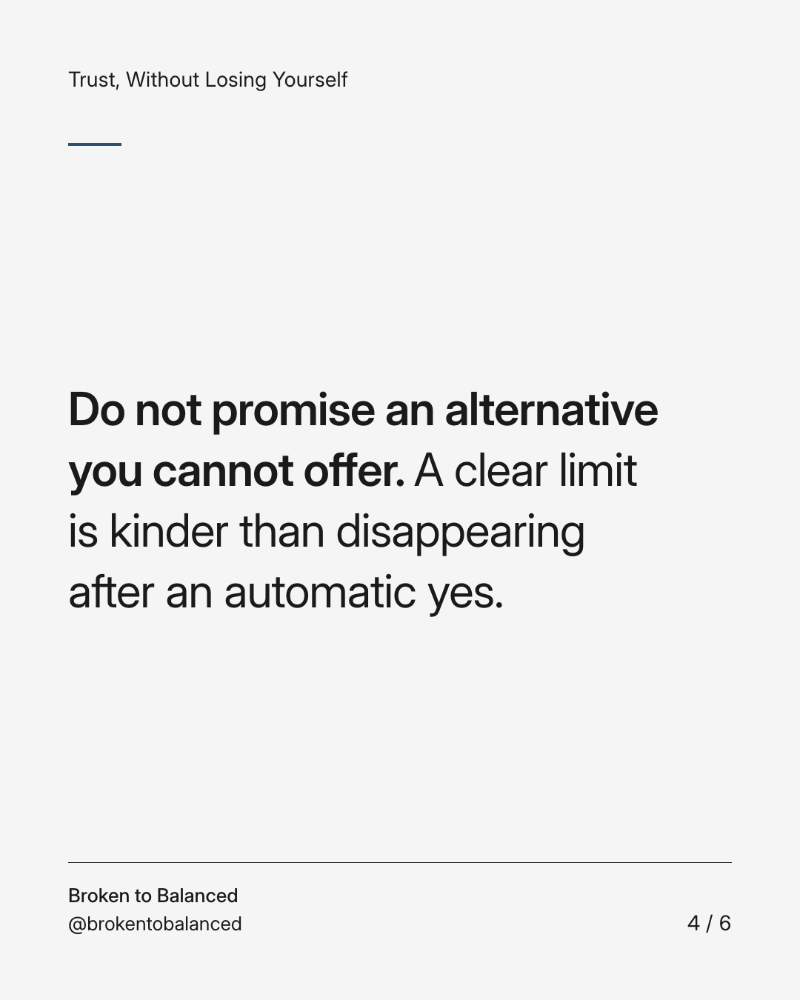
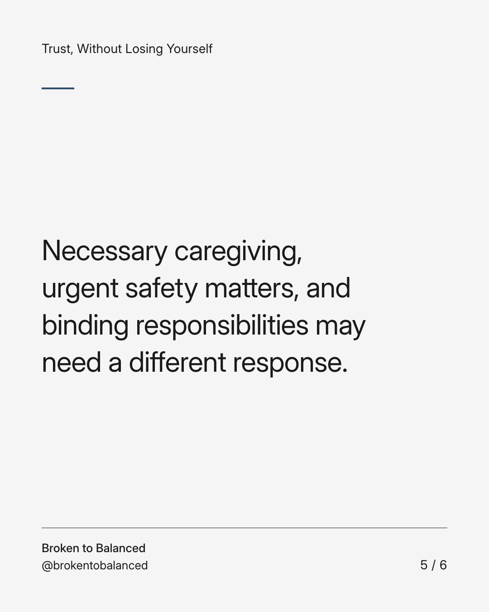

Exact text and accessibility text
You can be kind without making yourself constantly available.
Slide 1 of 6. You can be kind without making yourself constantly available.


Exact text and accessibility text
Availability is a practical limit, not a complete measure of care.
Slide 2 of 6. Availability is a practical limit, not a complete measure of care.


Exact text and accessibility text
Give a realistic answer: “I can't talk tonight. I can make time tomorrow afternoon.”
Slide 3 of 6. Give a realistic answer: “I can't talk tonight. I can make time tomorrow afternoon.”


Exact text and accessibility text
Do not promise an alternative you cannot offer. A clear limit is kinder than disappearing after an automatic yes.
Slide 4 of 6. Do not promise an alternative you cannot offer. A clear limit is kinder than disappearing after an automatic yes.


Exact text and accessibility text
Necessary caregiving, urgent safety matters, and binding responsibilities may need a different response.
Slide 5 of 6. Necessary caregiving, urgent safety matters, and binding responsibilities may need a different response.

Exact text and accessibility text
Share this with someone who confuses having limits with letting everyone down.
Slide 6 of 6. Share this with someone who confuses having limits with letting everyone down.
Exact caption
Plain-text fallback: select and copy the caption.